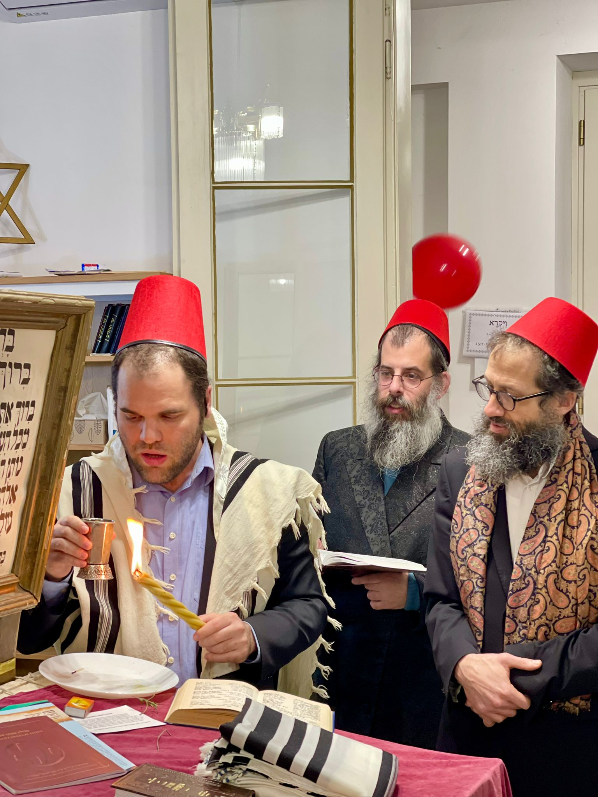
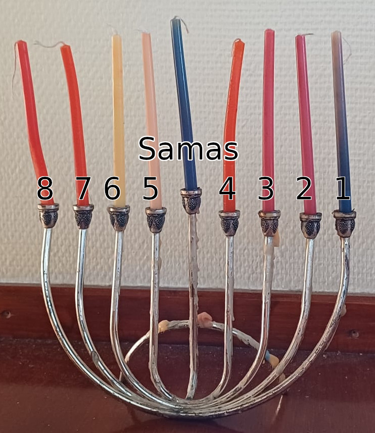
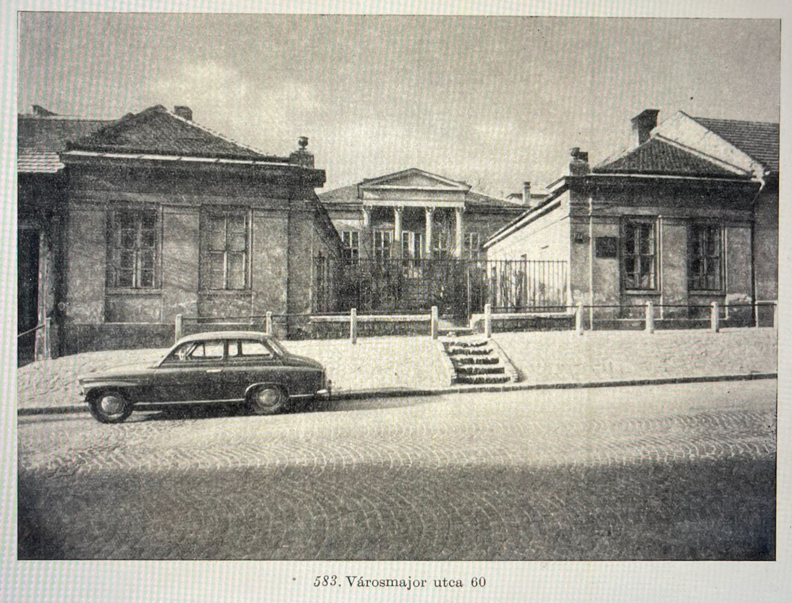

Orthodoxia Budán - Légy része a közösségnek!
Csatlakozz hozzánk sabeszenként!

Rendszeres Programjaink
Sábeszi Sáchrit
Csatlakozz be a reggeli imába, hallgasd meg a Tóraolvasást, maradj velünk a kidduson.
Ima 9:00-11:30, kiddus kb 2-ig
Kabbalat Shabbat
Szombatfogadás - Kabbalat sabbat énekléssel
Nyáron: másfél órával naplemente előtt
Télen: 15 perccel naplemente előtt
Online Misna Tanulás
Csatlakozz az online misna tanulásunkhoz Micha rabbival és Rambam magyarázatával.
19:00 hétfőnként
Lépj be a whatsapp csoportba
Én Jáákov
Csatlakozz hozzánk a zsinagógában, ahol a Talmud aggadikus részeit tanuljunk a Brachot traktátusból
19:20 hétfőnként
Közelgő Események
Megemlékezés az Alma utcai tömeggyilkosság 80. évfordulójáról
2025. február 3.
este 19:00
A felidézést segíti Zoltán Gábor íróA megemlékezést az áldozatok névsorának felolvasásával és gyászimával zárjuk.
1124 Városmajor utca 60. Kattints ide a teljes meghívóhoz
Hanukai Kvíz
Hanuka minden napján egy újabb kérés fog megjelenni.
Minden helyesen megoldott kérdés után megjelenik a kérdéshez kapcsolódó betű.
Ezekből Hanuka végén össze lehet állítani egy szót. Azok között, akik elküldik ezt a szót az alma@budaiorthodox.hu címre, kisorsoljuk Ács Dániel Nem Tudhatod című könyvét.
Hány gyertyát gyújtunk hanuka első napján Bét Sámmáj szerint?
Hibás
A nyolcadik napon milyen sorrendben szokás meggyújtani a gyertyákat?

4
6
2
3
Samas
1
7
8
5
Hibás
Miért nyolc napig tart hanuka, hiszen "csak" 7 napnyi csoda történt. Az nem volt csoda hogy egy napig égett az egynapnyi olaj, vagy mégis?
Hibás
Híreink
Ismerd meg Alma - Budai Ortodox Közösség-et
A múlt század harmincas éveiben alapított ortodox zsidó idősotthon imaterme 2020-ban nyílt meg újra önálló zsinagógaként a komplexum klasszicista épületében. A már csaknem egy évszázados épületben működő „Alma – Budai Orthodox Zsinagóga” így az egyetlen 21. századi alapítású ortodox imaház Budán. A közösség rabbija, dr. Farnadi-Jerusálmi Márk Micha, hetente Tóra-tanulást vezet Zoomon.
